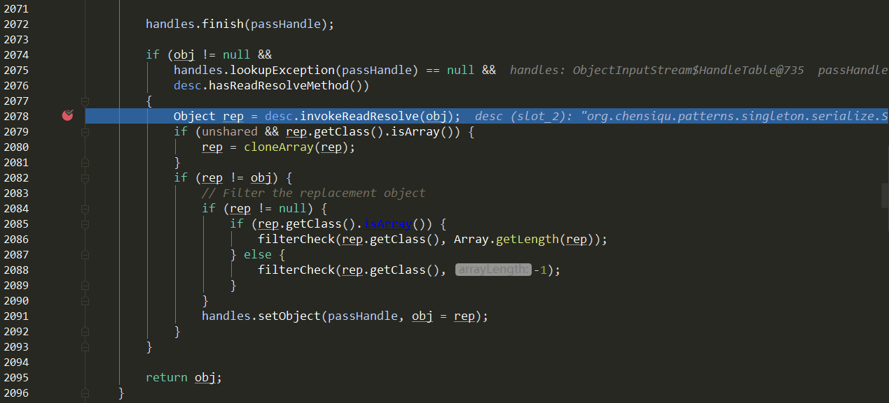

单例模式的定义是一个类有且仅有一个实例，并且自行实例化向整个系统提供。
其实现要点为：
私有的构造函数（保证只能由自身实例化自身）
提供一个方法返回自身的唯一实例
实现 单例模式常见的几种实现方式。
线程不安全懒汉式 1 2 3 4 5 6 7 8 9 10 11 12 13 14 public class Singleton1 private static Singleton1 instance; public static Singleton1 getInstance () if (instance == null ) { instance = new Singleton1(); } return instance; } private Singleton1 () } }
由于getInstance()方法没有加锁，在多线程中会出现多个线程都命中判断条件instance == null，导致new多个实例对象。
线程安全懒汉式 1 2 3 4 5 6 7 8 9 10 11 12 13 14 public class Singleton2 private static Singleton2 instance; public synchronized static Singleton2 getInstance () if (instance == null ) { instance = new Singleton2(); } return instance; } private Singleton2 () } }
在getInstance()方法上加锁，静态方法上加锁锁住的是类对象，虽然保证了线程安全，但是获取实例的方法加锁导致获取实例开销大、效率低。
线程安全饿汉式 1 2 3 4 5 6 7 8 9 10 11 public class Singleton3 private static Singleton3 instance = new Singleton3(); public static Singleton3 getInstance () return instance; } private Singleton3 () } }
基于类加载机制保证了线程安全（虚拟机保证在多线程同时初始化一个类的情况下， 只有会一个线程执行这个类的<clinit>()方法，其他线程需要阻塞等待。）
双检锁机制 1 2 3 4 5 6 7 8 9 10 11 12 13 14 15 16 17 18 public class Singleton4 private static volatile Singleton4 instance; public static Singleton4 getInstance () if (instance == null ) { synchronized (Singleton4.class ) { if (instance == null ) { instance = new Singleton4(); } } } return instance; } private Singleton4 () } }
先判断是否为空，再加锁。再实例化完成后，获取单例对象是无锁的，与线程安全的懒汉式实现相比，提高了获取单例对象的效率。
使用volatile关键字禁止指令重排，防止空指针异常：
@code instance = new Singleton4()这一行代码实际上是由三步操作（多条指令。线程切换可能发生在任意指令之后）完成：
分配内存空间
初始化对象
instance指向内存空间
如果未加volatile关键字，则可能发生指令重排序，执行步骤可能为 1->3->2。那么instance == null这个条件判断对象是否初始化时，因为步骤 3已经完成，但是实际上仍然在进行步骤 2，导致空指针异常。但是自己写并发代码测试时，未加volatile关键字也没出现过空指针异常。 测试过多次且改了多次测试代码也没有出现过空指针异常问题，这点原因暂时未知。测试代码可能有些问题，结论未知。
静态内部类 1 2 3 4 5 6 7 8 9 10 11 12 13 public class Singleton5 private static class SingletonHolder private static Singleton5 instance = new Singleton5(); } public static Singleton5 getInstance () return SingletonHolder.instance; } private Singleton5 () } }
使用内部静态类来实现懒加载，且线程安全，写法简单。
枚举 1 2 3 4 5 6 7 8 public enum Singleton6 { INSTANCE; public void sayHello () System.out.println("hello" ); } }
枚举实现单例是实现单例的最佳方式，可以绝对防止多次实例化。
而单例模式在Spring中应用，IoC容器使用的是登记式实现单例（单例注册表），不属于上面介绍的几种方式。
破坏 单例模式的破坏与防止破坏。
序列化破坏 序列化场景下的破坏，但是个人其实没有见过将单例对象进行序列化传输的应用场景。
序列化破坏验证 实现Serializable接口的单例：
1 2 3 4 5 6 7 8 9 10 11 12 13 14 15 public class SerializeSingleton implements Serializable private static final long serialVersionUID = -2896782629930400984L ; private static class SingletonHolder private static SerializeSingleton instance = new SerializeSingleton(); } public static SerializeSingleton getInstance () return SerializeSingleton.SingletonHolder.instance; } private SerializeSingleton () } }
测试代码：
1 2 3 4 5 6 7 8 9 10 11 12 13 14 15 16 17 18 public static void main (String[] args) throws IOException, ClassNotFoundException SerializeSingleton singleton = SerializeSingleton.getInstance(); byte [] serializeByte; try (ByteArrayOutputStream byteArrayOutputStream = new ByteArrayOutputStream(); ObjectOutputStream out = new ObjectOutputStream(byteArrayOutputStream)) { out.writeObject(singleton); serializeByte = byteArrayOutputStream.toByteArray(); } SerializeSingleton serializeSingleton; try (ByteArrayInputStream byteArrayInputStream = new ByteArrayInputStream(serializeByte); ObjectInputStream in = new ObjectInputStream(byteArrayInputStream)) { serializeSingleton = (SerializeSingleton) in.readObject(); } System.out.println(singleton); System.out.println(serializeSingleton); }
测试结果：
1 2 org.chensiqu.patterns.singleton.serialize.SerializeSingleton@58372a00 org.chensiqu.patterns.singleton.serialize.SerializeSingleton@25f38edc
可以看出得到了不同的两个实例对象。实现Serializable接口的单例类没有经过特殊处理的话，导致单例模式被破坏。本质上也是由反射操作导致的单例模式被破坏。
序列化破坏防止 可以增加readResolve()方法进行解决：
1 2 3 4 5 6 7 8 9 10 11 12 13 14 15 16 17 18 19 20 public class SerializeSingleton implements Serializable private static final long serialVersionUID = -2896782629930400984L ; private static class SingletonHolder private static SerializeSingleton instance = new SerializeSingleton(); } public static SerializeSingleton getInstance () return SerializeSingleton.SingletonHolder.instance; } private SerializeSingleton () } private Object readResolve () return getInstance(); } }
用破坏验证的测试代码重新测试，结果如下：
1 2 org.chensiqu.patterns.singleton.serialize.SerializeSingleton@58372a00 org.chensiqu.patterns.singleton.serialize.SerializeSingleton@58372a00
可以发现反序列化得到的实例对象与原先的实例对象是同一个对象。
源码分析：
在类ObjectInputStream的readOrdinaryObject()方法中，

在使用readObject()反序列化时，会判断该类是否存在readResolve()方法，存在则调用此方法返回此方法返回的实例对象。
可以进行测试，将readObject()返回对象改为一个字符串：
1 2 3 private Object readResolve () return "test" ; }
将测试代码的反序列化结果类型修改为Object，得到的结果为：
1 2 org.chensiqu.patterns.singleton.serialize.SerializeSingleton@58372 a00 test
反射破坏 通过反射调用私有的构造器，从而实例化一个新的对象：
1 2 3 4 5 6 7 8 9 10 11 public static void main (String[] args) throws NoSuchMethodException, IllegalAccessException, InvocationTargetException, InstantiationException Singleton singleton = Singleton.getInstance(); Class<Singleton> clazz = Singleton.class ; Constructor<Singleton> constructor = clazz.getDeclaredConstructor(); if (!constructor.isAccessible()) { constructor.setAccessible(true ); } Singleton reflectionSingleton = constructor.newInstance(); System.out.println(singleton); System.out.println(reflectionSingleton); }
测试结果：
1 2 org.chensiqu.patterns.singleton.damage.Singleton@214c265e org.chensiqu.patterns.singleton.damage.Singleton@448139f0
反射这种人为的破坏单例模式的方式，要想防范的话可以使用枚举实现单例。
1 2 3 4 Exception in thread "main" java.lang.NoSuchMethodException: org.chensiqu.patterns.singleton.Singleton6.<init>() at java.lang.Class.getConstructor0(Class.java:3082) at java.lang.Class.getDeclaredConstructor(Class.java:2178) at org.chensiqu.patterns.singleton.damage.ReflectionTest.main(ReflectionTest.java:18)
关于枚举实现单例防止反射破坏的更多细节，可以查看这篇博文：
为什么要用枚举实现单例模式
参考 单例模式 | 菜鸟教程